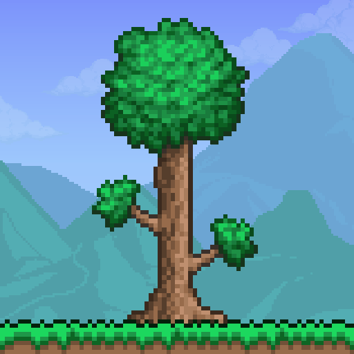

<html>

	<title>Games</title>
	<style>
		    .button {
        background-color: #000000;
        border: none;
        color: rgb(255, 255, 255);
        text-align: center;
        text-decoration: none;
        font-size: 16px;
        margin: 4px 2px;
        cursor: pointer;
        border-radius: 200px;
		border:1px solid black; 
		background-color: transparent;
    }
	
	body {
  background-color: #151515
  
}
	</style>
	<button onclick = redirc("./games/Minecraft_1.8.html")> 
	
	<br>
	Minecraft 1.8.8
	</button>
	<button onclick = redirc("./games/slope.htm")>
	
	<br>
	Slope
	</button>
	<button onclick = redirc("./games/tetris.html")>
	
	<br>
	Tetris

	</button>

	<button onclick = redirc('./games/Territorial_io_MP.html')> 
	
	<br>
	Territorial.io (multiplayer compatible)
	</button>
	<button onclick=redirc("./games/2048.html")>
	
	<br>
	2048
	</button>
	<button onclick=redirc("./games/Minecraft_1.12.2.html")>
	
	<br>
	Minecraft 1.12.2
	</button>
	<button onclick="redirc('./games/TerrariaMP.html')">
	
	<br>
	Terraria (Multiplayer)
	</button>
	<button onclick="redirc('./games/Terraria.html')">
	
	<br>
	Terraria (Singleplayer)
	</button>
	<script>
	function redirc(path) {
		location.href = path
	}
	</script>
	<script src = './assets/exploitscripts.js'></script>
</html>